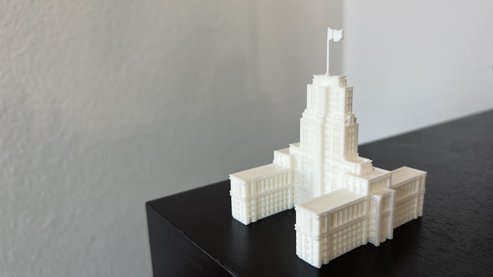

Orwell's Ministry of Truth
Scultped in Minecraft
In Orwell's 1984, the Ministry of Truth is the government branch responsible for suppressing truth and fabricating lies; it is a potent symbol of political censorship, surveillance, and historical revisionism. In 1984, Orwell took inspiration from the Senate House in London to model the Ministry of Truth. Inspired by the intimidating facade of the real life counterpart, I decided to bring this architecture into Minecraft, using the London Senate as a reference. The final model stands at 125 blocks tall.
I then converted the Minecraft file into an STL file and 3d printed the model:
